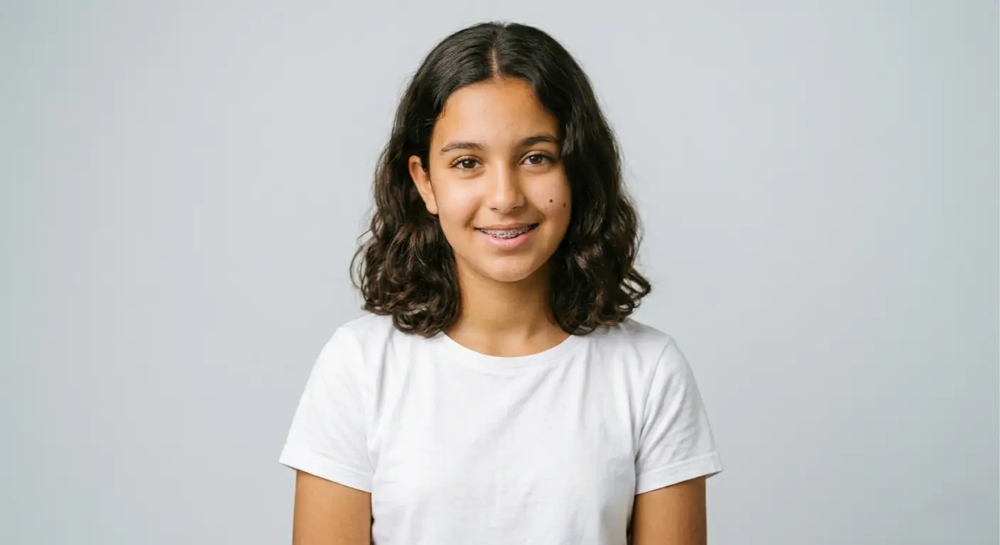
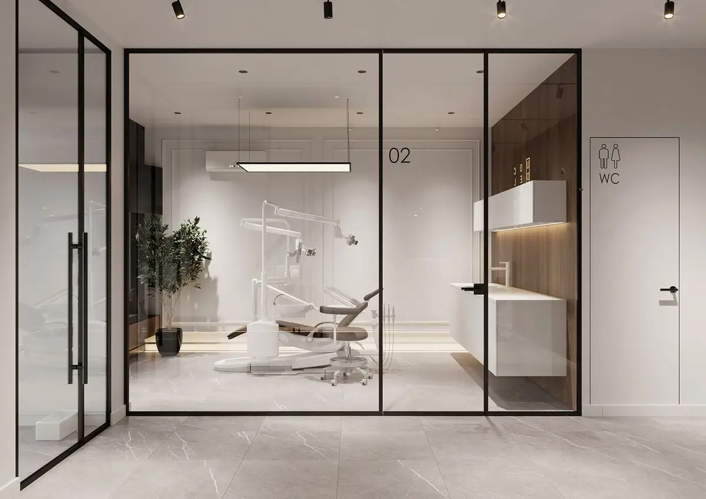

Bagues métalliques, céramiques ou gouttières transparentes. Enfants, adolescents, adultes. WeCare Dental Clinic établit un plan de traitement adapté à votre cas et à votre mode de vie.

Des dents mal alignées compliquent le brossage. Les zones difficiles d'accès accumulent la plaque, favorisent les caries et l'inflammation des gencives. Une mauvaise occlusion peut provoquer des douleurs articulaires, des maux de tête et une usure prématurée.
L'orthodontie corrige ces problèmes à tout âge. Chez l'enfant, elle guide la croissance des mâchoires. Chez l'adolescent, elle aligne les dents définitives. Chez l'adulte, elle redresse un sourire qui gêne depuis des années.
Au cabinet, WeCare Dental Clinic propose trois options : bagues métalliques pour les cas complexes, bagues céramiques pour la discrétion, gouttières transparentes pour le confort. Le choix se fait après un diagnostic complet avec radiographies et empreinte numérique.
Certains problèmes osseux sévères peuvent nécessiter une approche combinée orthodontie + chirurgie. WeCare Dental Clinic évalue chaque cas et vous oriente vers la solution adaptée.
Chaque appareil a ses forces. Le bon choix dépend de votre cas, de votre âge et de vos priorités.
| Bagues métalliques | Bagues céramiques | Gouttières transparentes | |
|---|---|---|---|
| Cas traités | Tous, y compris les plus complexes | Tous, y compris les plus complexes | Légers à modérés uniquement |
| Visibilité | Visible, brackets métalliques | Discrète, brackets couleur dent | Quasi-invisible, plastique transparent |
| Confort | Gêne les premières semaines, irritations possibles | Similaire aux métalliques, brackets plus lisses | Lisse, pas d'irritation, amovible pour manger |
| Hygiène | Brossage adapté autour des brackets | Brossage adapté autour des brackets | Brossage normal (gouttière retirée) |
| Durée moyenne | 12 à 24 mois | 12 à 24 mois | 6 à 18 mois |
| Pour qui | Enfants, ados. Le plus abordable | Ados, adultes. Esthétique + efficacité | Adultes. Discrétion maximale |
| Prix (Casablanca) | 12 000 - 25 000 MAD | 15 000 - 30 000 MAD | 15 000 - 35 000 MAD |

Votre cas est complexe ou vous cherchez l'option la plus abordable. Les bagues métalliques traitent tous les problèmes, à tout âge. C'est l'appareil le plus utilisé en orthodontie.
Vous voulez un traitement complet mais plus discret. Les brackets sont de la couleur de vos dents. Même efficacité que les métalliques, aspect plus soigné.
Vous êtes adulte, votre cas est léger à modéré, et la discrétion est prioritaire. Amovibles, quasi-invisibles. En savoir plus.
Examen clinique, radiographies panoramique et céphalométrique, empreinte numérique. WeCare Dental Clinic analyse l'occlusion, les axes dentaires et la croissance (chez l'enfant). Plan de traitement et devis détaillé.
Collage des brackets ou livraison des gouttières. Explications sur le port, l'hygiène, les aliments à éviter (bagues) et le calendrier de suivi.
Rendez-vous toutes les 4 à 6 semaines pour ajuster les fils (bagues) ou vérifier la progression (gouttières). Les résultats sont progressifs et visibles dès les premiers mois.
À la fin du traitement, un fil de contention collé derrière les dents et/ou une gouttière de nuit stabilisent le résultat. Sans contention, les dents risquent de bouger à nouveau.
Chirurgien-dentiste
Formée à la FMDC (Faculté de Médecine Dentaire de Casablanca), WeCare Dental Clinic prend en charge les traitements orthodontiques pour enfants, adolescents et adultes. Bagues métalliques, céramiques et gouttières transparentes : chaque plan est établi après un diagnostic complet pour un résultat stable et durable.
Gêne légère, sensibilité normale après la pose et après chaque ajustement. De la cire orthodontique protège les joues si besoin. Alimentation molle les premiers jours.
Brossage minutieux après chaque repas. Évitez les aliments durs et collants (bagues). Contrôle au cabinet toutes les 4 à 6 semaines. Les résultats apparaissent progressivement.
Fil de contention collé derrière les dents et/ou gouttière de nuit. Le résultat est stable tant que la contention est respectée. Contrôle annuel au cabinet.
Bagues métalliques, 18 mois. Adolescent.
Appareil fixe céramique, 14 mois. Adulte.
Gouttières transparentes, 8 mois. Adulte.
Première évaluation recommandée à 7 ans pour détecter un éventuel problème précoce (mâchoire étroite, dent bloquée). Le traitement actif commence généralement entre 11 et 14 ans. L'orthodontie adulte est possible à tout âge si les gencives et l'os sont sains.
Au WeCare Dental Clinic : bagues métalliques 12 000 à 25 000 MAD, céramiques 15 000 à 30 000 MAD, gouttières 15 000 à 35 000 MAD. Le prix dépend de la complexité et de la durée. Devis après diagnostic.
Les gouttières conviennent aux cas légers à modérés, offrent discrétion et confort (amovibles, quasi-invisibles). Les bagues traitent tous les cas, même sévères. Le choix dépend aussi de votre discipline : les gouttières exigent 22h de port quotidien. WeCare Dental Clinic vous conseille après diagnostic.
12 à 24 mois en moyenne. Les cas simples (diastème, léger encombrement) : 6 à 12 mois. Les cas complexes (malocclusion, chevauchement sévère) : jusqu'à 30 mois. WeCare Dental Clinic donne une estimation précise lors du diagnostic.
Une gêne et une sensibilité sont normales les premiers jours et après chaque ajustement mensuel. Pas de douleur véritable. Des antalgiques classiques et de la cire orthodontique suffisent pour le confort.
Oui. Les dents se déplacent à tout âge. Le traitement peut prendre un peu plus de temps chez l'adulte (os plus dense), mais les résultats sont équivalents. De plus en plus d'adultes se traitent à Casablanca, notamment avec les gouttières transparentes.
Un fil de contention collé derrière les dents et/ou une gouttière de nuit stabilisent le résultat. Sans contention, les dents risquent de bouger à nouveau progressivement. Le contrôle annuel au cabinet vérifie la stabilité.
La CNOPS rembourse partiellement l'orthodontie, surtout pour les moins de 16 ans. Le montant varie selon la couverture. Certaines mutuelles privées couvrent un complément. Nous fournissons les documents nécessaires.
Consultation orthodontique au cabinet pour évaluer votre cas et définir le meilleur plan de traitement.